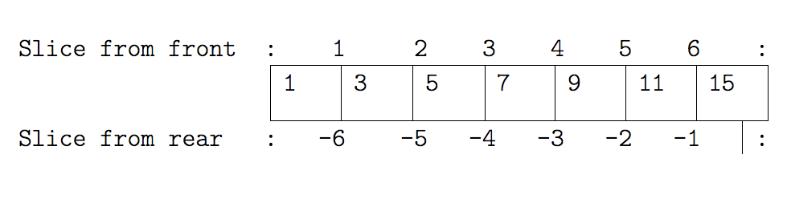

Why Python?
- Free, well-documented, runs almost everywhere
- Large (and growing) user base among researchers and scientists
- Simple, readable, flexible, powerful language and easier for beginners to grasp
- Great for team working
- Python aim - only one way to do something
- Programs look very similar, easy for others to read
- Want to teach basic programming concepts that can be applied to other programming languages
What can you use it for?
- Almost anything - it’s general purpose!
- Used in many fields
- Bioinformatics, Biology, Data visualisation, Engineering, Software development, etc.
- Used for processing data, general scripting, mapping, web applications, frameworks, numerical processing, education, HPC, at Google, …
Python is up and coming!
- Based on Southampton PhD students software usage survey conducted by SSI’s Policy researchers:

We’ll be teaching Python 3
- Python 3 is currently the standard version
- We’ll teach using version 3!
- Python 3 has many advantages over Python 2
- Many consistency improvements - removing redundancy
- In places, simply more sensible e.g. integer division
- Python 2 support will end in 2020
- ‘Short version: Python 2.x is legacy, Python 3.x is the present and future of the language’
- For new projects, seriously consider Python 3!
Learning objectives
- how to assign values to variables, simple operations
- how to repeat actions with loops
- how to make choices using conditionals
- why we should divide programs into small, single-purpose blocks of code
- how to build a program, step by step, to do basic analysis on some climate data
- how we should analyse and fix errors in our programs
- how to read and analyse patient data using libraries
- how to visualise data using libraries
Turning on Python Interpreter
- The interpreter provides an interactive environment to play with the language
- Mac/Linux: Open a terminal window and type python3
- Windows: Open Git Bash and type python
- At the prompt type ‘hello world!’

Why indentation?
- Studies show that’s what people actually pay attention to
- Every textbook on C or Java has examples where indentation and bracing don’t match
- Doesn’t matter how much indentation you use, but the whole block must be consistent
- Python Style Guide (PEP 8) recommends 4 spaces
- And no tab characters
Indexing a List Example I

Indexing a List Example II

Slicing a List Example I

Slicing a List Example II

NumPy Arrays
- NumPy arrays and operations on arrays of data

Indexing in a NumPy 2D array
- The indices are (row, column) instead of (column, row).
- Example Patient inflammation data who were given treatment for arthritis:
- Rows: Hold information for a single patient
- Columns: Represent successive days
Cont..

Wrap-up Challenge: Connecting the dots
Write a python script (function) for Fahrenheit to Celsius temperature conversion and stores the output in a file.
- Hint (Tools to be used):
- Unix pipes and filters
- Python functions
- Command-line programs
- Using Fahr_to_kelvin() and Kelvin_to_celsius() functions
/ − will be replaced by the title